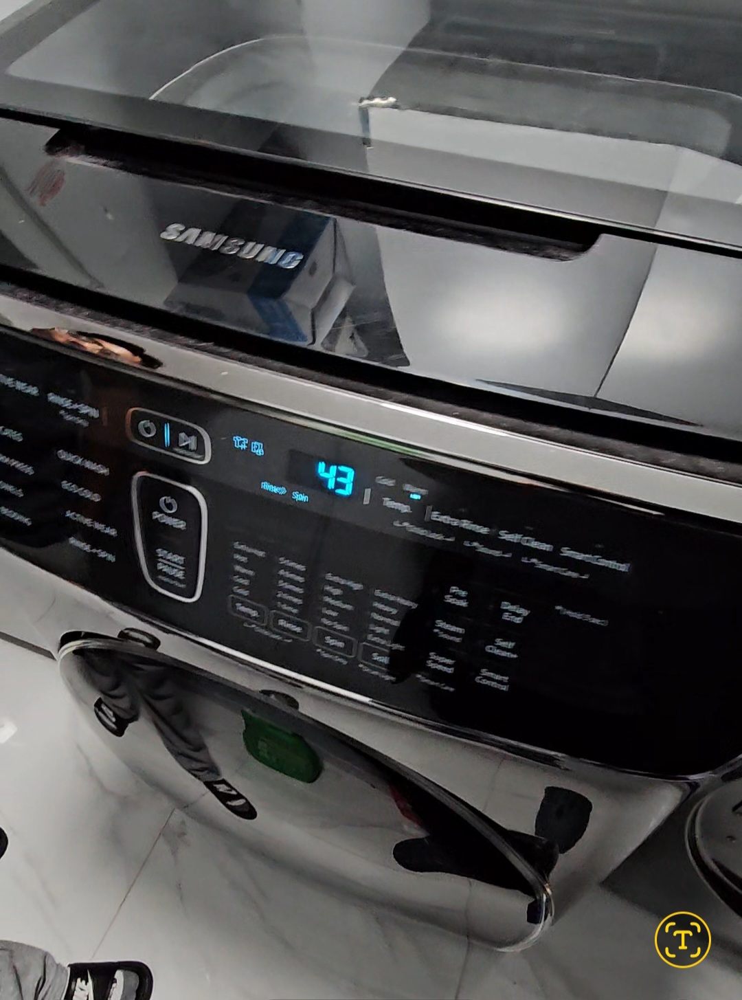
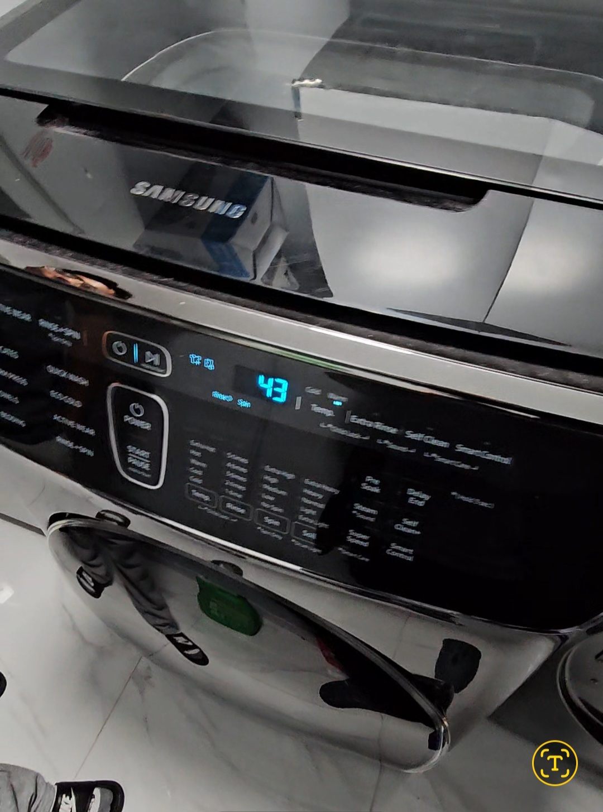

Why is my samsung dryer making a banging noise.
-
Too Large a Load - If the dryer is overloaded or the clothes in it are not distributed in a balanced manner, it can cause the drum to move unevenly and cause banging noises.
-
Worn drum rollers - The drum rollers support the drum and can wear over time. If they are damaged, they may not support the drum properly, resulting in knocking sounds it causes samsung dryer making loud banging noise.
-
Problems with the drum bearing - The drum bearing ensures that the drum rotates smoothly inside the Samsung washing machine. If it is worn or damaged, it can cause the drum to shift and bang against the dryer housing.
-
Loose or damaged components - The screws or bolts that hold dryer parts together can become loose, or damaged from vibration. Also, any internal components such as the blower wheel or belt may become misaligned.
-
Foreign Objects - Sometimes small objects, such as coins or buttons, can get stuck in the drum or blower, creating noise.
-
Levels- If the dryer is not level, it can vibrate excessively during operation, and make noise.
-
Foreign objects inside the dryer such as winter shoes or slippers can make loud noises.
-
To fix the problem, check for an unbalanced load, inspect the drum rollers and bearings, tighten any loose parts and make sure the dryer is level. If the problem persists, it is better to contact a professional fixbc technician in Vancouver.
The banging noise made by your Samsung dryer in Vancouver can be caused by several reasons.
Professional Samsung Dryer Repair Services in Vancouver.
-
When your Samsung dryer malfunctions, it can disrupt your daily routine and cause unnecessary stress.
Fortunately,samsung dryer service center Vancouver boasts a number of professional service centers that specialize in Samsung dryer repairs, ensuring your appliance is back in optimal working condition quickly and efficiently.
-
Expertise - Certified technicians in Vancouver have extensive training and experience specifically with Samsung appliances. They can diagnose issues accurately and implement effective solutions.
-
Genuine Parts - Reputable service centers use original Samsung parts, which ensures compatibility and longevity. This is crucial for maintaining the quality and efficiency of your dryer.
-
Warranty Protection - Professional repairs often come with warranties on both parts and labor, providing peace of mind. This means if issues arise shortly after the repair, you re covered.
-
Time Efficiency - Professionals in Vancouver can quickly identify problems and complete repairs, saving you time and hassle. Many service centers offer same-day service to minimize downtime.
-
Safety - Dryers can pose safety risks if not repaired properly. Professionals are trained to handle electrical and mechanical components safely, reducing the risk of accidents.
Why Choose Professional Repair.
Opting for professional repair services offers numerous benefits.
Common Issues with Samsung Dryers
Samsung dryers, like any appliance, can encounter several common issues, including:
Why is My Samsung Dryer Making a Banging Noise?
The banging noise made by your Samsung dryer in Vancouver can be caused by several reasons:
- Too Large a Load: If the dryer is overloaded or the clothes in it are not distributed in a balanced manner, it can cause the drum to move unevenly and make banging noises.
- Worn Drum Rollers: The drum rollers support the drum and can wear over time. If they are damaged, they may not support the drum properly, resulting in knocking sounds.
- Problems with the Drum Bearing: The drum bearing ensures that the drum rotates smoothly. If it is worn or damaged, it can cause the drum to shift and bang against the dryer housing.
- Loose or Damaged Components: The screws or bolts that hold dryer parts together can become loose or damaged from vibration. Internal components such as the blower wheel or belt may also become misaligned.
- Foreign Objects: Small objects, such as coins or buttons, can get stuck in the drum or blower, creating noise.
- Levels: If the dryer is not level, it can vibrate excessively during operation, causing noise.
- Foreign Objects Inside the Dryer: Items like winter shoes or slippers can make loud noises.
To fix the problem, check for an unbalanced load, inspect the drum rollers and bearings, tighten any loose parts, and ensure the dryer is level. If the problem persists, it is better to contact a professional technician in Vancouver.
Professional Samsung Dryer Repair Services in Vancouver
When your Samsung dryer malfunctions, it can disrupt your daily routine and cause unnecessary stress. Fortunately, the Samsung dryer service center in Vancouver boasts several professional service centers that specialize in repairs, ensuring your appliance is back in optimal working condition quickly and efficiently.
Why Choose Professional Repair?
- Expertise: Certified technicians have extensive training and experience specifically with Samsung appliances.
- Genuine Parts: Reputable service centers use original Samsung parts for compatibility and longevity.
- Warranty Protection: Professional repairs often come with warranties on both parts and labor.
- Time Efficiency: Professionals can quickly identify problems and complete repairs.
- Safety: Trained technicians handle electrical and mechanical components safely.
Common Issues with Samsung Dryers
- Not Heating: This can be due to a faulty heating element or a problem with the thermostat.
- Drum Won't Spin: Could stem from a broken belt or motor.
- Excessive Noise: Worn-out parts like rollers or bearings can cause unusual sounds.
- Error Codes: Professionals can interpret these codes and provide swift resolutions.
Finding a Reliable Service Center in Vancouver
When searching for a Samsung dryer repair service, consider the following tips:
- Reviews and Recommendations: Look for service centers with positive customer feedback.
- Certifications: Ensure technicians are certified and experienced with Samsung appliances.
- Service Guarantee: Choose a center that offers a warranty on their work.
- Convenience: Look for a service that offers flexible scheduling and same-day repairs.
- Transparent Pricing: A trustworthy service should provide clear estimates without hidden fees.
Conclusion
When faced with dryer troubles, enlisting the help of a professional Samsung dryer service center in Vancouver is a smart choice. With their expertise and commitment to customer satisfaction, you can trust that your appliance will be repaired to the highest standards. Don t let a malfunctioning dryer disrupt your life—reach out to a qualified service provider today!
Understanding the Role of a Professional Samsung Appliance Repair Technician
In today s modern homes, Samsung appliances play a crucial role in daily life. However, they can encounter issues over time, making a professional Samsung appliance repair technician essential.
What Makes a Samsung Appliance Repair Technician Unique?
- Brand-Specific Expertise: Technicians have in-depth knowledge of Samsung product line, allowing for accurate diagnosis.
- Advanced Training: Technicians undergo rigorous training, often certified by Samsung.
- Diagnostic Skills: Skilled technicians utilize advanced tools to identify issues, including software problems.
- Customer Service Orientation: Technicians provide a friendly experience, with clear communication about repairs.
- Warranty Knowledge: They understand warranty claims and ensure repairs keep warranties intact.
- Sustainability Practices: Many technicians promote eco-friendly repair practices, reducing waste.
Common Issues Handled by Samsung Appliance Repair Technicians
- Refrigerators: Cooling problems, leaks, or ice buildup.
- Washers and Dryers: Issues such as failure to spin, drainage issues, or unusual noises.
- Ovens: Repairs for inconsistent heating or malfunctioning controls.
- Dishwashers: Troubleshooting problems with drainage or cleaning efficiency.
Conclusion
A professional Samsung appliance repair technician is dedicated to restoring functionality to your household. Their blend of technical expertise and customer service makes them invaluable. Whether it’s a simple repair or a complex issue, trusting a certified technician ensures your appliances receive the best care.
Models of all appliance we repair
- Whirpool

- Admiral
- Amana
- Kenmore
- LG
- SAMSUNG
- Maytage
- Bosh
- Bloomberg
- MIELE
- GE
- In fact we can repair all models

Models of all appliance we repair
- Jenn-air
- KitchenId
- Moffat
- Kenmore
- Thermador
- Inglis
- Ikea
- Broan
- Fulgor
- Beaumark
- GE
- In fact we can repair all models
home appliance repair near me, I am always with you and can come to you in Burnaby, Vancouver Coqutlam, Surrey, don t worry,
I can fix home appliances at your home.
Review (2023.10.12)
Jessica Miller from Vancouver

We called this fast-fix company to repair
our Maytage dishwasher,
the dishwasher stopped running with water,
the guys came,
turned it around and finally fixed it,
our family saved $500,
we didn t buy a new one, we will contact them in the future.Thank you.

Review (2023.12.01)
Scarlett from Burnaby
One fine day our Samsung dryer broke down, it wouldn t turn on,
we are dependent on it, we save money, we have a large family,
I decided to order the dryer repaired, thanks guys, everything works.
Review (2023.08.11)
Maddison from Coquitlam
5 years have passed since we bought our huge Zabzerro refrigerator,
water started leaking onto the floor from the freezer, ice was collecting,
I couldn t wait long, the guys came and fixed it, thank you, I m so glad.
Review (2024.06.01)
Harry from West Vancouver

Thank you guys, they fixed my grill in a restaurant,
it was the switches that didn t work, then they broke, without it I wouldn t have been able to work,
3 months have passed and everything is working after the repair.
Review (2024.02.01)
James from North Vancouver

The LG washing machine broke down, it just stopped running with water,
I couldn t open the door, I called the guys, they fixed everything,
replaced the spare parts, everything works great, Thanks to Oscar.
Review (2024.03.11)
Jack from Surrey

The Maytag dryer doesn t heat up, it doesn t dry the clothes,
the guys fixed it in a couple of hours, now it s like new,
I know how to save money. Thank you for having such hands and a head.
Review (2024.04.21)
Archie from Vancouver

Maytag refrigerator is not cooling,
the light was on but there was no cold, the refrigerator is good,
I decided to make repairs, the guys fixed everything,
it works 5 stars in Google.Thank you